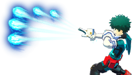
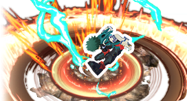
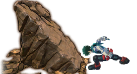

α: Delaware Smash: Full Bullet
Ataque de largo alcance que dispara varias ondas de choque al mismo tiempo.
Usa el modo de Apuntado para concentrar los perdigones en un mismo punto
β: Manchester Smash
Ataque de daño en area donde realizas una patada al suelo y al golpearlo con la punta de tu talon generas una onda de choque.
Cae mientras usas la habilidad para hacer que la onda de choque sea mas grande.
γ: Impacto Terrestre
Ataque de corto alcance donde levantas un pedazo de tierra con una patada al suelo
Manten presionado para impulsarte y dar un enorme salto.
| Habilidad | Daño | Cargas |
|---|---|---|
| Alpha | 21 (Per Bullet) | 8 |
| Beta | 120/50 (TrueDmg) | 3 |
| Gamma | 135 | 2 |